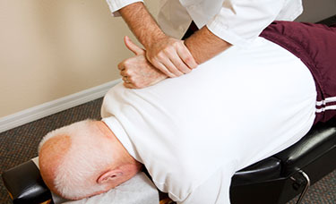
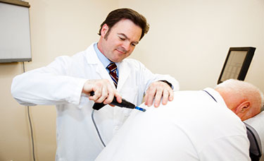
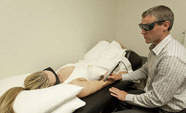
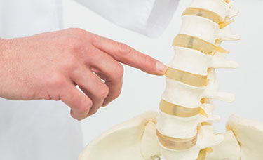
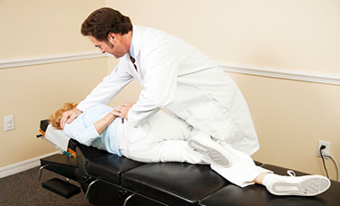
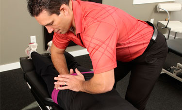
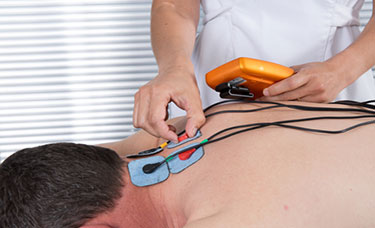
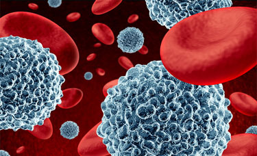

Multiple approaches to find what works for your body. Every treatment plan is tailored to you.
Traditional hands-on spinal adjustments to restore proper alignment, reduce nerve interference, and relieve pain. Dr. Guthrie is trained in diversified adjusting techniques, allowing him to tailor each adjustment to your specific needs.

Computer-assisted technology that scans your spine to precisely identify misalignments, muscle spasms, and areas of inflammation. The Pro Adjuster delivers gentle, controlled corrections without the traditional "cracking" sound, making it ideal for patients who prefer a softer approach.

Advanced cold laser technology that reduces pain and inflammation while helping your body regenerate tissue naturally. This non-invasive treatment accelerates healing without medication or surgery.

Non-surgical decompression therapy that gently stretches the spine, creating negative pressure within the disc. This helps herniated or bulging disc material retract, relieving pressure on nerves and promoting healing.

A gentle, pumping motion applied to the spine using a specialized table. This technique helps increase spinal mobility, reduce disc pressure, and improve nutrient flow to spinal structures.

Using a specially designed table with sections that drop slightly during the adjustment, this technique allows for effective manipulation with less force. Comfortable and efficient for treating multiple areas of the spine.

Therapeutic electrical currents applied to affected areas to reduce inflammation, ease pain, and calm muscle spasms. Often used alongside other treatments for enhanced results.

Personalized nutrition guidance that addresses the root causes of inflammation and pain. Dr. Guthrie focuses on brain function, immune system health, and endocrine balance to support your body's natural healing.
Based on the GAP protocol, this approach focuses on restoring digestive health and gut flora balance. A healthy gut is the foundation of a strong immune system and overall wellness.

Take our quick wellness quiz and we'll recommend the best treatment for your situation.